➔
Mans maršruts no dzīvesvietas līdz Latvijas Universitāti
Zunda torņi
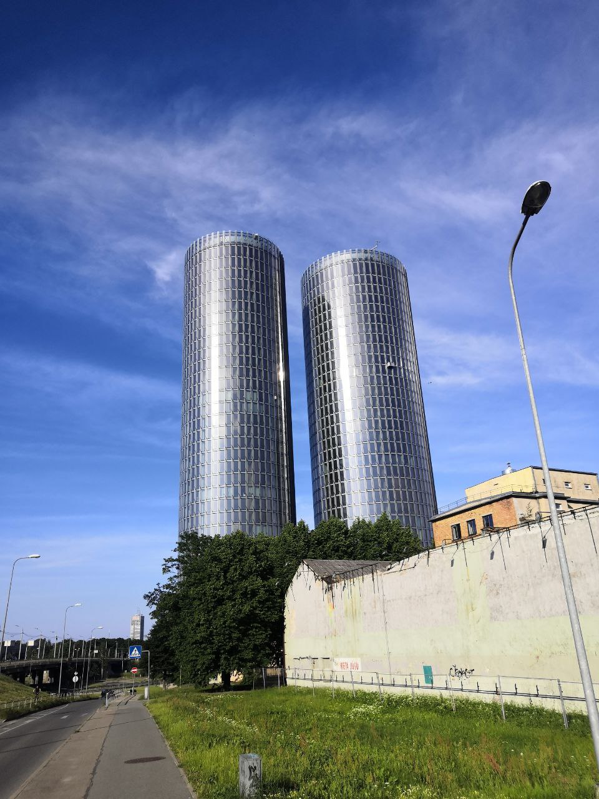
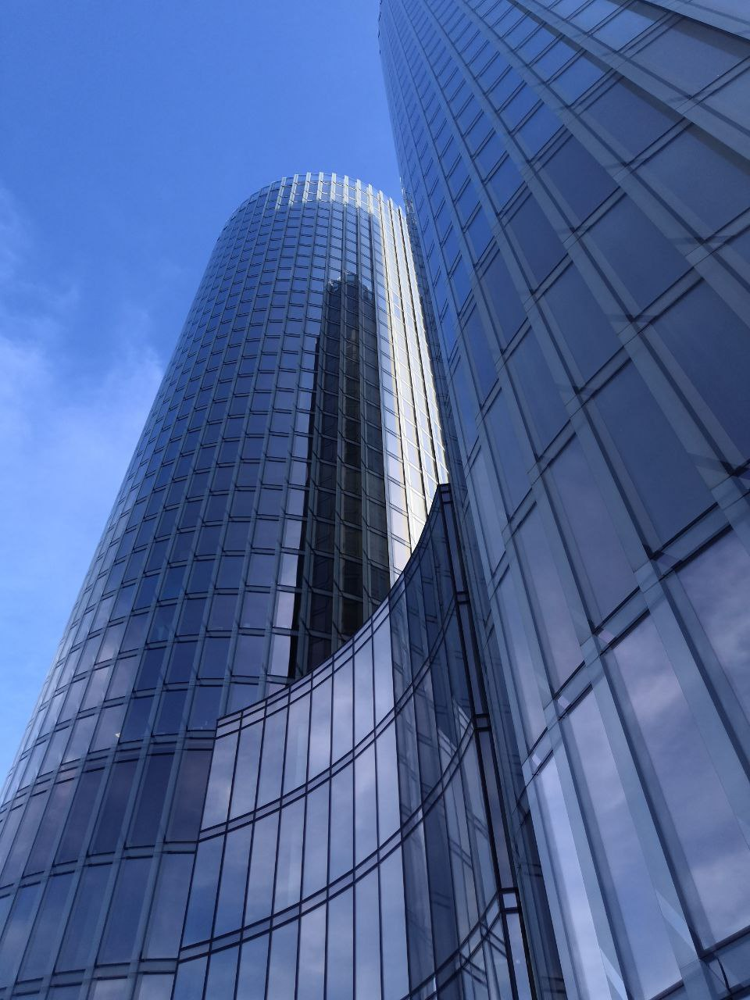
Mans ceļojums sākas pie Zundas torņiem, kur vienmēr uz mirkli apstājos, lai apbrīnotu Rīgas vēsturisko mantojumu.
Mans ceļojums sākas pie Zundas torņiem, kur vienmēr uz mirkli apstājos, lai apbrīnotu Rīgas vēsturisko mantojumu.
Torņu augstums: South 123 m, North 117,5 m. Kopējais apartamentu skaits abos torņos ir 341. North Tower tiks piedāvāti 204 apartamenti no 4. līdz 30. stāvam platībā no 35 līdz 300 kvadrātmetriem. Premium klases iekšējā apdare (ar iebūvētu virtuvi) paredzēta apartamentiem no 4. līdz 18. stāvam.
Swedbank birojs
Tad eju garām Swedbank birojam, mūsdienīgam Rīgas biznesa simbolam. Dzīve šeit rit ik dienas pilnā sparā: biznesa tikšanās, finanšu darījumi, ēkas logos atspoguļojas mūsdienu dzīves ritms.
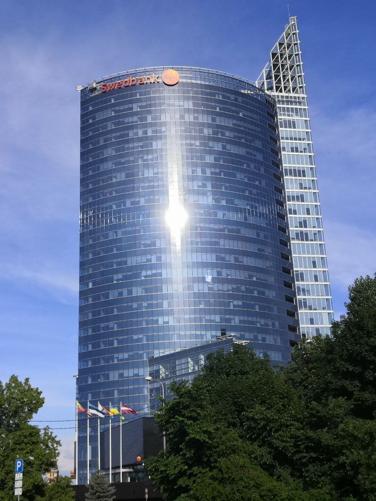
Vanšu tilts
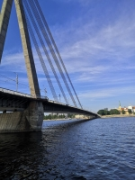
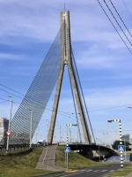
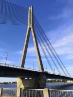
Mans ceļojums turpinās caur Vanšu tiltu, brīnišķīgu tiltu pār Daugavu. Katru reizi, kad esmu uz tilta, mana sirds pārspēj šī ūdensceļa skaistumu, kas vēsturiski ir bijis pilsētas dzīvības spēks.
Mans ceļojums turpinās caur Vanšu tiltu, brīnišķīgu tiltu pār Daugavu. Katru reizi, kad esmu uz tilta, mana sirds pārspēj šī ūdensceļa skaistumu, kas vēsturiski ir bijis pilsētas dzīvības spēks.
Rīgas pils
Tad mans skatiens krīt uz Rīgas pili - pili, kas iedveš godbijību un cieņu. Šī 14. gadsimtā celtā pils ir bijusi daudzu vēsturisku notikumu lieciniece, un tās sienas glabā gadsimtu noslēpumus.
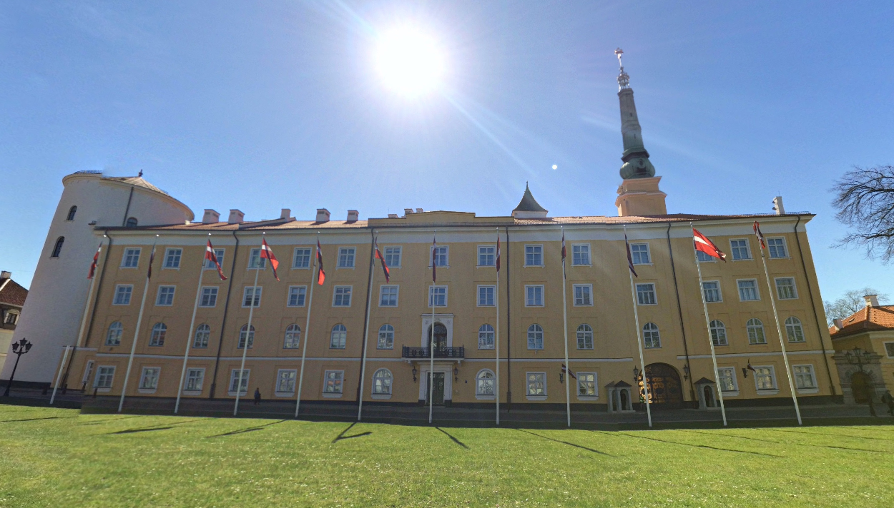
Tad mans skatiens krīt uz Rīgas pili - pili, kas iedveš godbijību un cieņu. Šī 14. gadsimtā celtā pils ir bijusi daudzu vēsturisku notikumu lieciniece, un tās sienas glabā gadsimtu noslēpumus.
Latvijas Nacionālais mākslas muzejs
Tad mans skatiens krīt uz Rīgas pili - pili, kas iedveš godbijību un cieņu. Šī 14. gadsimtā celtā pils ir bijusi daudzu vēsturisku notikumu lieciniece, un tās sienas glabā gadsimtu noslēpumus.
Tad mans skatiens krīt uz Rīgas pili - pili, kas iedveš godbijību un cieņu. Šī 14. gadsimtā celtā pils ir bijusi daudzu vēsturisku notikumu lieciniece, un tās sienas glabā gadsimtu noslēpumus.
Rīgas Kristu Piedzimšanas pareizticīgo katedrāle
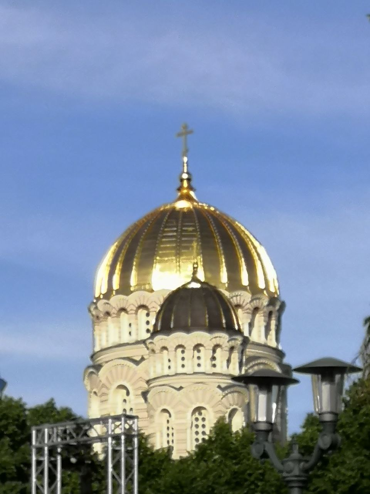
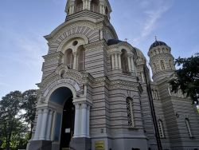
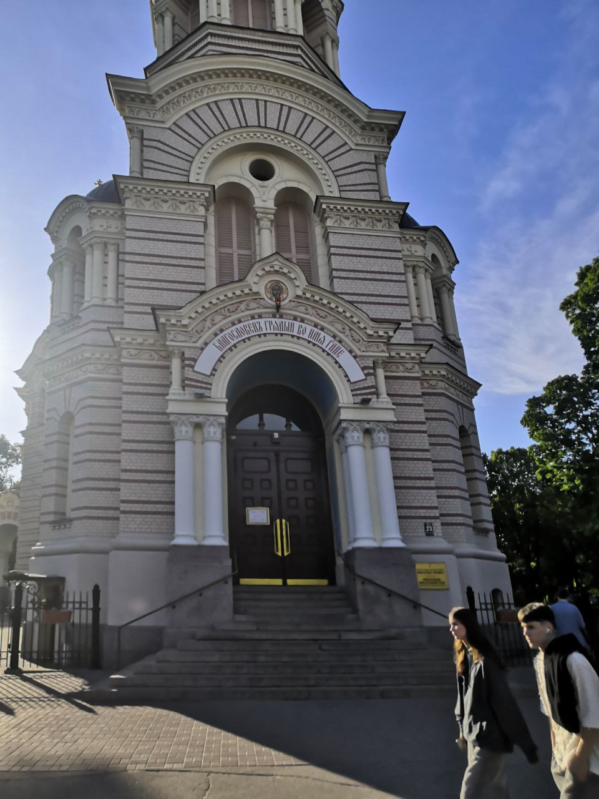
Tālāk mans ceļš ved uz Rīgas Kristus Piedzimšanas pareizticīgo katedrāli, kur majestātiskā arhitektūra un garīgā atmosfēra atgādina par garīgo pārdomu nozīmi mūsu drudžainajā dzīvē.
Brīvības piemineklis
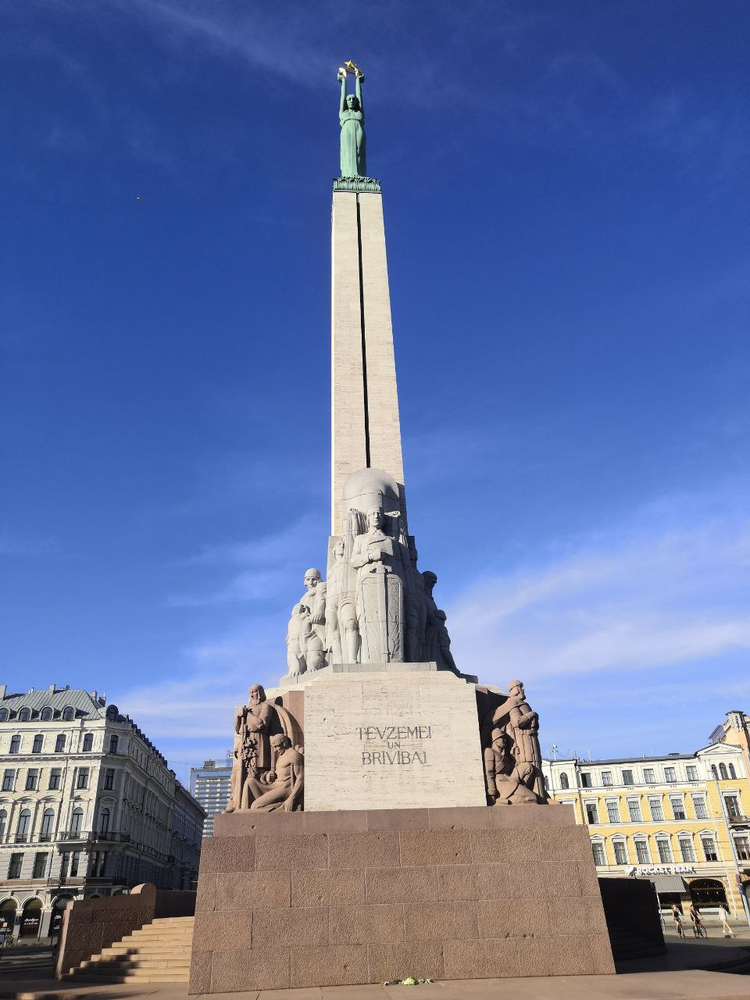
Beidzot mans maršruts beidzas pie Brīvības piemineklis - Brīvības pieminekļa, kas tika uzcelts par godu Latvijas neatkarībai. Šis piemineklis ir mūsu tautas lepnuma un vienotības simbols, un tā klātbūtne mani vienmēr piepilda ar optimismu un spēku.